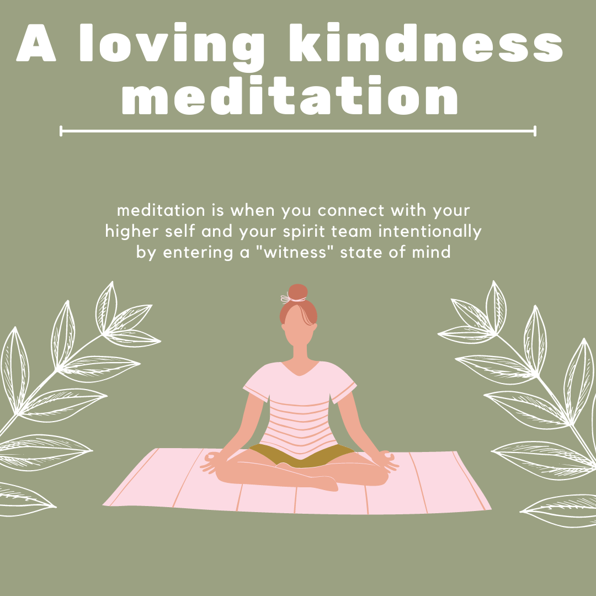
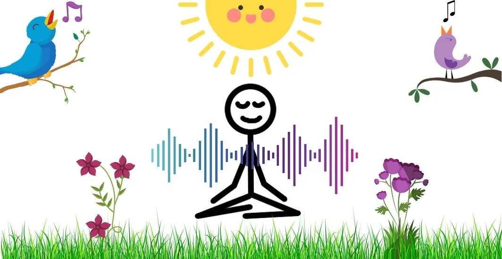

1. Loving-Kindness Meditation
This meditation, also known as Metta meditation, focuses on cultivating love and compassion for yourself and others. Begin by sitting in a comfortable position and silently repeat phrases like "May I be happy, may I be healthy." Gradually extend these feelings to others, including loved ones, acquaintances, and even those you have difficulties with.
2. Guided Meditation
Guided meditation involves listening to a teacher or recording that provides directions on how to meditate. It can include visualizations, relaxation techniques, or specific goals. This is an excellent method for beginners to learn meditation.

3. Mantra Meditation
Mantra meditation involves silently repeating a word or phrase (mantra) to focus the mind. Popular in traditions like Transcendental Meditation, this practice uses the mantra to transcend distracting thoughts. Examples include "Om" or other personal affirmations.

4. Open Awareness Meditation
This form of meditation encourages a state of mindfulness by observing thoughts, feelings, and sensations as they arise, without clinging to or rejecting them. It promotes a sense of openness and acceptance of the present moment.
